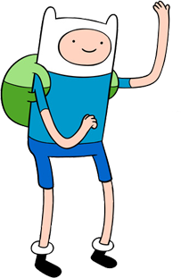

Homies help homies. ALWAYS.
For more Finn's quotes check Quotes Page
Finn the Human Mertens (also called Finn the Human) is the protagonist in Adventure Time.
It is revealed in "Min and Marty" that Finn was born on Hub Island (one of the human-inhabited islands outside of The Land of Ooo) to his father Martin Mertens and his mother, Minerva Campbell. Having been a known con artist, Martin is confronted by an old foe and forced to flee the house with baby Finn while Minerva was at work. Martin brings Finn onto a raft, only to be attacked by the Guardian. Finn and Martin are separated as a result, with Finn being sent adrift towards Ooo and Martin disappearing.
This is Finn's daily outfit.
